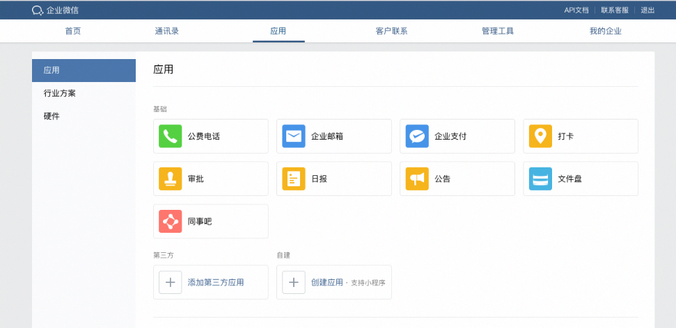

企业微信的应用具备以下能力：
收发消息
以普通会话的形式存在，可推送消息、接收消息，也可以设置自定义菜单。
- 通过“消息推送”API，推送应用消息给企业成员
- 开启“接收消息”，员工进入应用、发送消息、操作菜单等动作会以事件的方式转发给企业的应用后台
- 自定义8种个性化菜单
应用主页
应用主页可以配置为一个H5网页或者小程序，配置以后就会出现在工作台，点击以后直接进入H5网页或者小程序。
- Oauth2用户身份识别。
- JS-SDK调用原生客户端Native的能力。
授权登录
企业已有的Web网页、移动APP，可以使用企业微信的账号登录。
- 扫一扫授权登录Web网页
- 嵌入登录SDK，一键登录移动APP
开始开发
1、管理员进入企业微信“管理后台” -- “应用”，创建应用

2、设置应用logo、名称、描述、可见范围等。
开发阶段“应用可见范围”可先选择小范围可见，待开发完成后再开放给企业员工。
3、查看应用详情，可以获取到应用接口的几个重要参数。
| 字段 | 说明 |
|---|
| AgentId | 应用的唯一标识，用于接口区分不同应用，或者回调通知中标识通知来源。 |
| Secret | 用于获取access_token，相当于登录密码，开发者应保管好该字段值，避免在公开场合暴露（比如在网页参数） |
4、根据企业CorpID，以及应用Secret，获取access_token。然后就可以使用应用相关的API接口。
5、企业微信3.1.2 版本后，为支持更多能力，企业关联添加的「小程序」已统一为「应用」，统一为应用后：
- 小程序可获得使用「应用」的全部能力，新增包括应用信息修改、推送多种类型消息、自定义会话菜单、接收用户消息、自定义工作台展示、支持更多授权方式、使用审批接口、获取调用群聊会话能力、微信插件内可访问等。
- 原关联添加的小程序并入应用统一展示，不再单独区分。
- 企业创建应用时，可选择“已有小程序快速创建”，通过关联已有小程序进行创建应用，会自动同步小程序信息为应用名称、图标和说明，并默认设置该小程序首页为应用主页。
- 企业已添加的应用，也可以在应用主页设置关联小程序，将小程序页面设为应用主页。